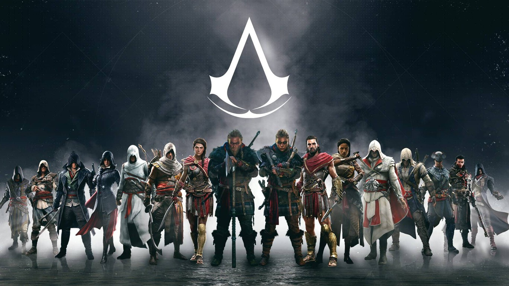
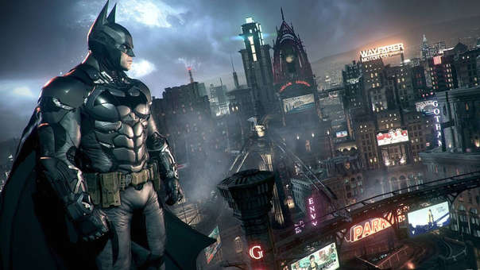
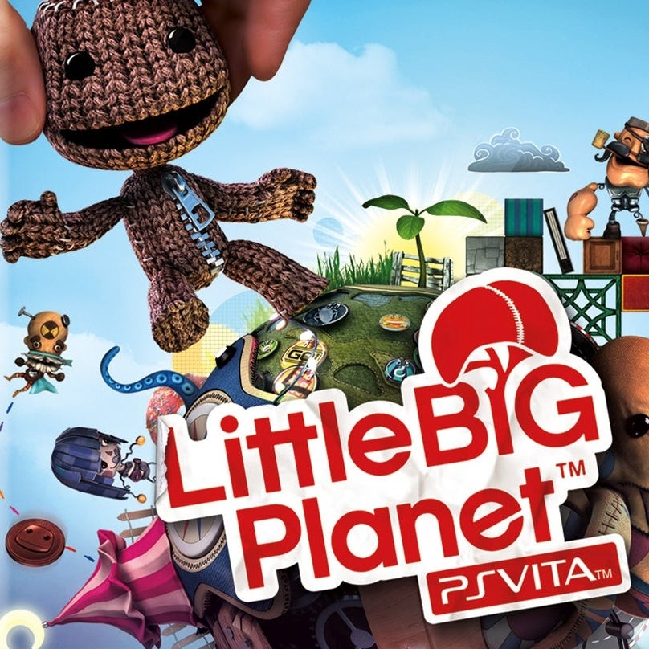

¿Qué juego?
Cuando no tengo cosas que hacer y ya estoy cansado de estudiar me pongo a jugar videojuegos, ya sea en el Xbox, en la laptop o en la psvita. Digamos de una forma que por épocas juego en las distintas consolas, pero con la que suelo jugar más es con la laptop o la psvita.
Uno de los que me gusta más son los juegos de Assassin's Creed en el Xbox One o Xbox 360, y los que juego son Assassin's Creed 3 o Assassin's Creed The Ezio Collection.

De los otros juegos que suelo jugar son los de Batman, ya he jugado varios de ellos como el Batman Arkham Knight, Batman Arkham City, y otros dos juegos más, aunque solo he terminado dos.

Uno también de mis juegos favoritos en portátil son los juegos de Little Big Planet los cuales son los de psvita y psp, los dos me han gustado mucho. El que otro que quisiera jugar es el que está en consola o laptop.

Este es el juego que he jugado más en laptop, aunque todavía soy malo para jugar. Me gusta mucho y es que hace poco lo compre de vez en cuando lo juego y así voy practicando un poco.